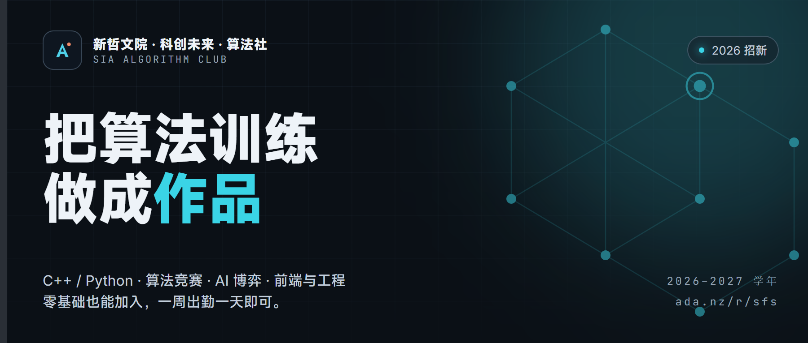
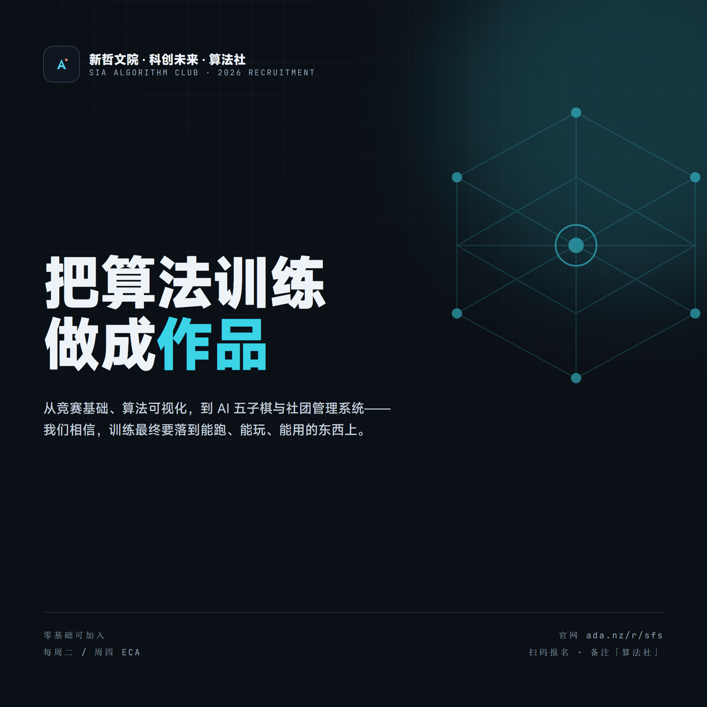
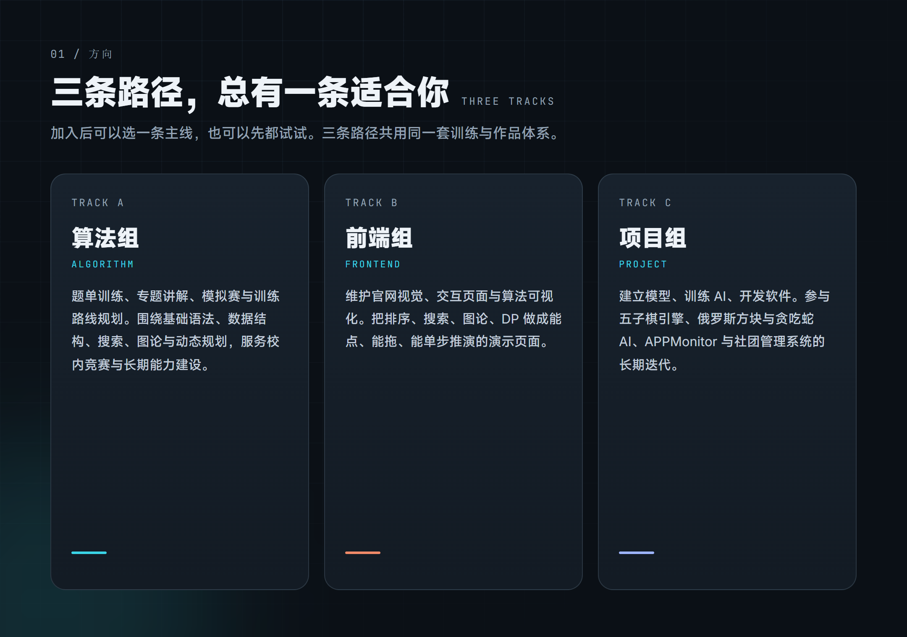
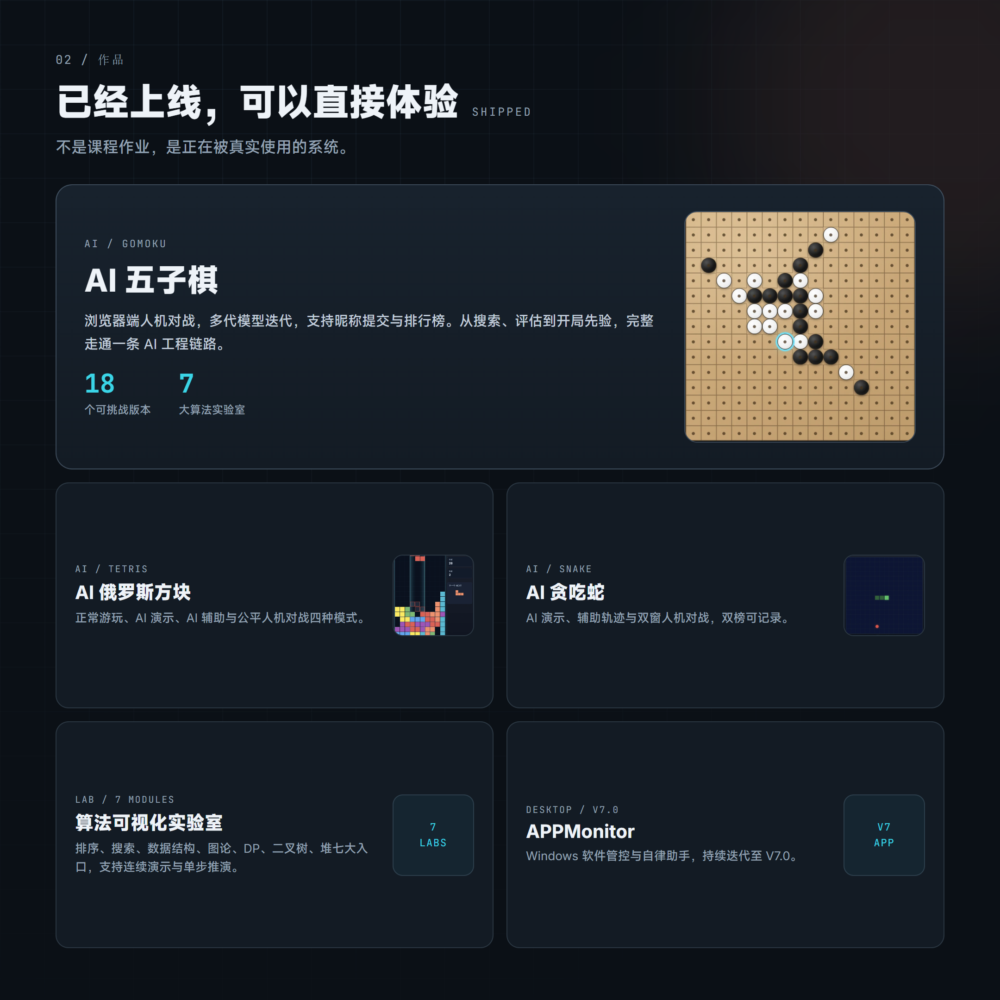
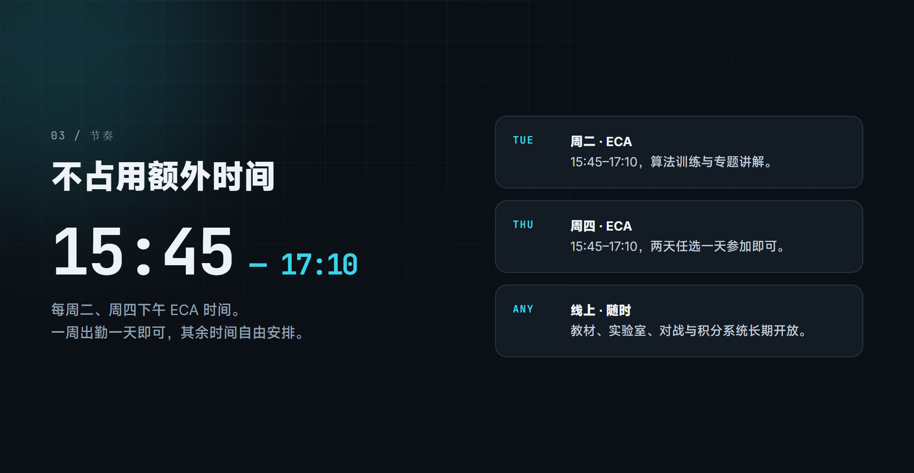
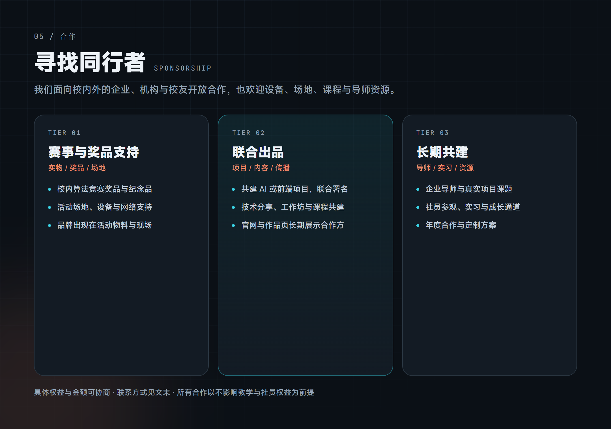

把算法训练
做成作品
零基础可加入，一周出勤一天。C++ / Python、算法竞赛、AI 博弈与前端工程——三条路径任选，训练最终落到能跑、能玩、能用的东西上。
01我们是谁
新哲文院·科创未来 · 算法社（Algorithm Club），一个把算法训练做成可运行产品与系统的社团。
我们不只刷题。我们相信训练最终要落到作品上——所以你在这里看到的不是课程大纲，而是已经上线、可以直接点开玩的东西：AI 五子棋、AI 俄罗斯方块、AI 贪吃蛇、七大算法可视化实验室，以及社长持续迭代到 V7.0 的 Windows 软件管控工具 APPMonitor。
社团主要教学 C++ 与 Python，兼顾竞赛培训与软件项目开发维护。无论你是零基础新手，还是已经接触过竞赛的同学，只要对算法、编程、AI 或网页开发感兴趣，这里都有你的位置。

02三条成长路径，总有一条适合你
加入后可以选一条主线，也可以先都试试。三条路径共用同一套训练与作品体系。
题单训练、专题讲解、模拟赛与训练路线规划。围绕基础语法、数据结构、搜索、图论与动态规划，服务校内竞赛与长期能力建设。
维护官网视觉、交互页面与算法可视化。把排序、搜索、图论、DP 做成能点、能拖、能单步推演的演示页面。
建立模型、训练 AI、开发软件。参与五子棋引擎、俄罗斯方块与贪吃蛇 AI、APPMonitor 与社团管理系统的长期迭代。

03已经上线，可以直接体验
这些不是课程作业，是正在被真实使用的系统。
AI 五子棋
浏览器端人机对战，经历多代模型迭代，支持昵称提交与排行榜。从搜索、评估到开局先验，完整走通一条 AI 工程链路。目前共有 18 个可挑战版本，从铭星 V1 一路到 V10 系列，还有完全自研的展示版 Gomoku-Satori。
AI 俄罗斯方块
正常游玩、AI 演示、AI 辅助阴影与公平人机对战四种模式。双方使用同一序列，AI 只做自然降落，成绩可上榜。
AI 贪吃蛇
AI 演示、AI 辅助深色轨迹与转向提醒、双窗人机对战，普通榜与对战榜双榜记录。
算法可视化实验室
排序、搜索、数据结构、图论最短路、动态规划、二叉树、堆——七大入口，支持连续演示与单步推演。
APPMonitor
由社长开发的 Windows 软件管控与自律助手，持续迭代至 V7.0。
社团管理系统
签到兑积分、积分商城、活动公告、留言箱、社团盘等，已投入日常使用。

04时间安排：一周出勤一天即可
社团活动在每周二、周四下午的 ECA 时间（15:45–17:10），两天任选一天参加即可，不额外占用你的时间。
其余时间，教材、算法实验室、AI 对战与积分系统都在线上长期开放。

05三步加入
打开算法社官网，点击「立即加入」，填写中文姓名、班级和联系方式。也可以顺便写写你是谁、算法社哪里吸引了你、你想在这里获得什么。
管理员会查看申请并尽快联系你，确认方向与第一次活动时间。
周二或周四 15:45–17:10，任选一天。不需要提前准备，直接来就好。
官网快捷地址：ada.nz/r/sfs → 点击「立即加入」
也可以扫描下方二维码添加负责人微信，备注「算法社」。
06寻找同行者：赞助与合作
算法社面向校内外的企业、机构与校友开放合作。我们需要的不只是资金，也包括设备、场地、课程与导师资源。
- 校内算法竞赛的奖品与纪念品
- 活动场地与设备支持
- 品牌出现在活动物料与现场
- 共建 AI 或前端项目并联合署名
- 技术分享、工作坊与课程共建
- 合作方在官网与作品页长期展示
- 企业导师与真实项目课题
- 社员参观与实习通道
- 年度合作与定制方案
具体权益与金额可协商，所有合作以不影响教学与社员权益为前提。
合作联系：［请填写负责老师 / 指导单位联系人姓名、职务、电话或邮箱］

07常见问题
- Q：我完全零基础，能加入吗？
- 能。社团主要教学从 C++ 与 Python 基础开始，欢迎所有零基础同学。已经接触过竞赛的同学也可以直接进入算法组的训练路线。
- Q：会不会很占时间？
- 每周二、周四下午 ECA 时间活动，两天任选一天即可。其余训练与项目按自己的节奏推进。
- Q：一定要会写代码才能报名吗？
- 不需要。报名只填写中文姓名、班级和联系方式，没有笔试和面试。
- Q：报名之后多久会收到联系？
- 管理员会尽快查看并联系你。如果长时间没有收到回复，可以直接扫码添加负责人微信。
- Q：社团和竞赛是什么关系？
- 算法组会围绕竞赛组织训练，但社团不只服务竞赛——前端组和项目组同样有完整的作品线。
算法社正在把「学算法」变成「做出东西」。
如果你也想让自己的训练留下痕迹，欢迎加入我们。
扫码添加负责人微信，备注「算法社」
活动时间：每周二、周四 ECA 15:45–17:10（任选一天）
官网：ada.nz/r/sfs